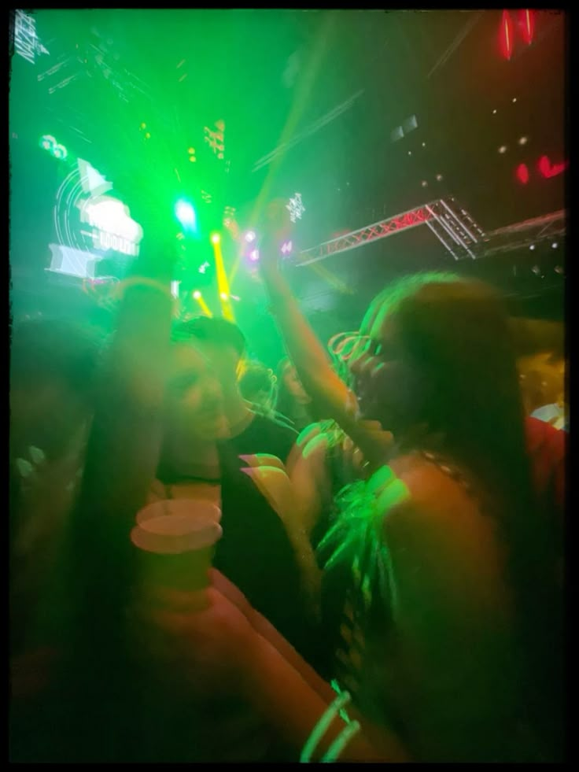
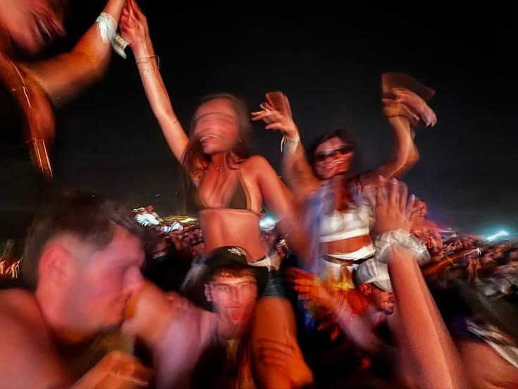
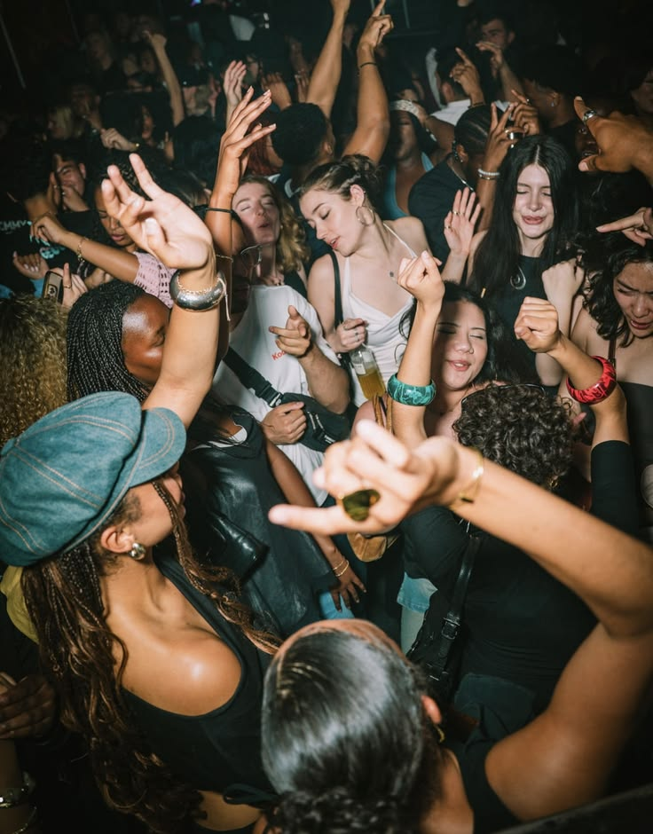
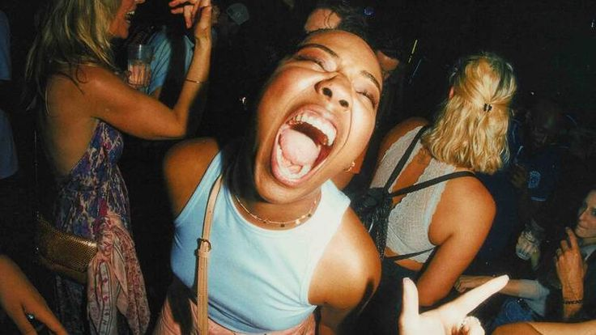
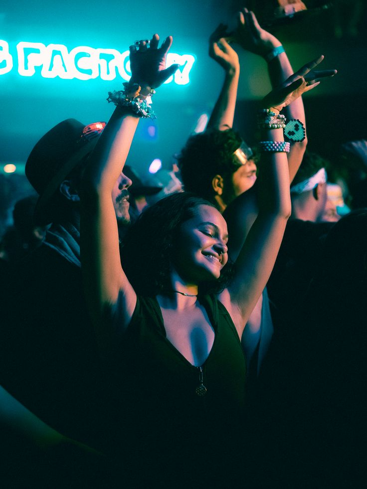

El Atardecer
Apertura de puertas. Bajamos los BPMs: comida, fotos y exploracion del predio.
no apto
2026
THE FESTIVAL EXPERIENCE
DISASTER ya no es una fiesta a la que vas; es un fenomeno que te sucede.
Accede a la preventa




Concepto evolucionado
Tomamos la energia caotica original y la ordenamos en una experiencia de 19:00 a 05:00. La musica es el hilo conductor; lo que pasa alrededor es lo que convierte la noche en DISASTER.
No es para mirar. Es para entrar y sobrevivirlo.Horario
Apertura de puertas. Bajamos los BPMs: comida, fotos y exploracion del predio.
Torneos masivos de beer pong, inflables gigantes y desafios de equipo.
La musica sube, las luces cambian y las pistas empiezan a cerrarse sobre la noche.
Explosiones coordinadas de color, CO2 y energia maxima en las dos pistas.
Ultimo track, salida del predio y relatos que todavia no existen online.
Tickets
Ex Campo
El corazon del festival: pogo, polvos de color y conexion total con la musica.
Ex VIP
Zona elevada y preferencial para vivir el caos con comodidad de elite.
Preventa 1
Por tiempo limitado.
La preventa 1 incluye:
Vaso DISASTER reutilizable de polimero rigido, con diseno exclusivo de la edicion.
Funda transparente para celular: polvo de color, espuma o liquidos sin perder conexion.
Camara analogica descartable de 24 fotos para capturar la noche desde lo crudo.
Soundtrack
Reggaeton, trap, RKT, techno, house y club hasta que cambie la luz.
Micro-experiencias
Electronic, Techno y House. Tulum meets rave industrial, LED curvas y laser.
Reggaeton, Trap y RKT. Grafitis neon, jaulas de baile y strobo rojo.
Beer pong masivo, inflables gigantes de competicion y desafios de equipo.
Artistas, glitter biodegradable y pintura neon que brilla en la oscuridad.
Hamburguesas smash, tacos, pizzas y opciones bajoneras curadas de Tucuman.
Zona oculta abierta de 02:00 a 03:00. Solo los que la encuentren sabran que hay.